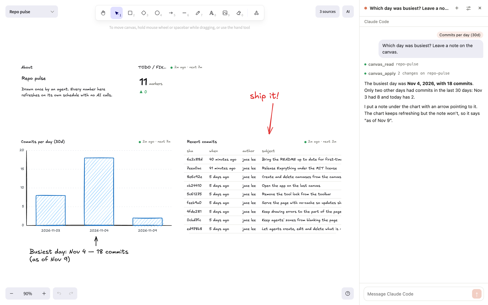

Draw it once.
It stays fresh.
그리는 건 한 번,
업데이트는 알아서.
Ask your coding agent for a dashboard and it draws one on an Excalidraw canvas. Behind every chart is a recipe: where the data comes from, how often to fetch it, how to show it. A daemon on your machine keeps running those recipes, so the canvas stays current without another AI call. 코딩 에이전트에게 대시보드를 부탁하면 Excalidraw 캔버스에 그려 줘요. 차트마다 데이터를 어디서 가져와 얼마나 자주 갱신하고 어떻게 보여 줄지 정한 ‘레시피’가 있어요. 이 레시피를 내 컴퓨터의 데몬이 계속 실행하니까, AI를 다시 부르지 않아도 캔버스는 늘 최신이에요.

How it works작동 방식
Your agent does the thinking once. After that it is plain commands on a schedule.에이전트는 처음에 한 번만 일해요. 그다음부터는 정해진 주기로 명령이 돌 뿐이에요.
Ask부탁하기
“Draw a repo pulse canvas for this repo: commits per day, the TODO count, recent commits.”“이 저장소 현황을 캔버스에 그려 줘. 하루 커밋 수, TODO 개수, 최근 커밋까지.”
It writes recipes레시피 만들기
Through MCP or the exp CLI, your agent describes each widget and the recipe that feeds it, tries them in a dry run, then applies.에이전트가 MCP나 exp CLI로 위젯마다 데이터를 가져올 레시피를 만들고, 한 번 시험해 본 뒤 캔버스에 올려요.
{ "kind": "exec",
"cmd": ["git", "log", "…"],
"refresh": { "every": "10m" } }It stays fresh최신 상태 유지
The daemon runs each recipe on its schedule, keeps its history, and pushes changes to the open canvas. Your agent has moved on; the numbers keep moving.데몬이 레시피를 주기마다 실행하고 기록을 남기며, 바뀐 내용을 열려 있는 캔버스에 바로 보내요. 에이전트는 떠나도 숫자는 계속 움직여요.
Live data you can draw on실시간 데이터 위에 바로 그리세요
Widgets and your own sketches share one Excalidraw canvas.위젯과 직접 그린 그림이 하나의 Excalidraw 캔버스에 함께 놓여요.
Live widgets실시간 위젯
Charts, tables, stats, logs and markdown, each fed by a recipe: a command, a file, data you push, or your agents' own activity.차트, 표, 숫자, 로그, 마크다운을 쓸 수 있어요. 데이터는 명령 실행 결과, 파일, 직접 보낸 데이터, 에이전트 활동에서 가져와요.
It's ExcalidrawExcalidraw 그대로
Draw shapes, arrows and notes around live data. Give widgets a hand-drawn style and their charts are drawn by hand too.실시간 데이터 옆에 도형, 화살표, 메모를 자유롭게 그리세요. 손그림 스타일을 고르면 차트까지 손으로 그린 듯 바뀌어요.
AI sidebarAI 사이드바
Talk to Claude Code or Codex beside the canvas. Select something and say “this”; it works from what you selected.캔버스 옆에서 바로 Claude Code나 Codex와 대화해요. 무언가를 선택하고 “이거”라고 하면 그걸 보고 작업해요.
Watch it work작업하는 게 보여요
An agent's cursor shows where it is, and what it is changing stays locked until it is done. ⌘Z takes back what it drew.에이전트가 어디를 작업 중인지 커서로 보이고, 고치는 동안에는 그 부분이 잠겨요. 에이전트가 그린 건 ⌘Z로 되돌릴 수 있어요.
Local and careful로컬에서 안전하게
The daemon listens on 127.0.0.1 behind a token, and a command runs only after you approve it.데몬은 내 컴퓨터(127.0.0.1)에서만, 토큰이 있어야 응답해요. 명령은 내가 승인해야 실행돼요.
Agent activity에이전트 활동
Optional hooks put what Claude Code and Codex are doing, session by session, on a canvas of its own.원하면 훅을 켜서 Claude Code와 Codex가 무슨 일을 하는지 세션별로 캔버스에 띄울 수 있어요.
Quick start시작하기
Node 22.13+ and pnpm 10. Developed and tested on macOS.Node 22.13 이상과 pnpm 10이 필요해요. macOS에서 개발하고 테스트했어요.
git clone https://github.com/build-gear/Exprything.git
cd Exprything
pnpm install && pnpm build
pnpm exp open # start the daemon, open a canvas# 데몬을 켜고 캔버스 열기
pnpm exp connect claude # or: pnpm exp connect codex# 또는: pnpm exp connect codexThen ask your agent그다음, 에이전트에게
“Draw a repo pulse canvas for this repo.”“이 저장소 현황을 캔버스에 그려 줘.”